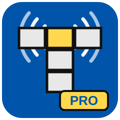

Tidy Pro Plus is TidyOS Pro with a flasher where you tick exactly what goes on the board and see the free space as you go. A pocket field computer on a Heltec V4: a 902–928 MHz spectrum sweep, AMI meter traffic counter, GPS site survey and an RF exposure estimate, plus the TidyOS desktop in any browser. It can share the board with The Shelf (dual boot).
Installing replaces what's on the board. A backup copies the whole flash (firmware, settings, Wi-Fi, files kept on the board) to one file on this computer, and Restore (step 6) puts it back exactly as it was. Plug the board in with a USB data cable and click Back up. It takes 3–5 minutes.
Tick the pieces you want copied onto the board. The bar shows where each one lands in the board's 16 MB of flash and how much room is left as you tick and untick. Then click Install and choose the board's port when Chrome asks. Chrome or Edge on a PC, Mac or Raspberry Pi. If no port shows up, hold PRG on the board while you plug it in.
| Part | Heltec V4 pins | Notes |
|---|---|---|
| GNSS (GPS) module | The V4's GNSS header (GPIO 38–42, 34) | Found by itself at start-up (9600 or 115200 baud). Sets the clock when there's no internet. |
| microSD module | CS 4 · MISO 6 · CLK 47 · MOSI 48 · 3V3 · GND | Moved off GPIO 39–42, which the GNSS module uses. 3.3 V modules only. FAT32. |
| 900 MHz antenna | The LoRa antenna connector | TidyOS Pro only listens; it never transmits. Use a 902–928 MHz antenna and set its gain in RF Sweep (stock V4 ≈ 2 dBi). |
No GPS fitted? Then a card wired for The Shelf (CS 42, MOSI 41, CLK 40, MISO 39) still works.
TidyOS-XXXXXX (password tidyos123) on your phone and open http://192.168.4.1. The board's own screen shows the name and address. In Settings, join your home or work Wi-Fi.http://tidyos-xxxxxx.local (the address is on the desktop's bottom bar). The top bar has Restart (back to the boot menu) and ☾ Deep Sleep (radio, GPS and screen off; press PRG to wake).Live 902–928 MHz spectrum in 129 channels of 200 kHz (the Wi-SUN / FAN plan Riva and most 900 MHz AMI mesh networks use), with average, peak and peak hold, a waterfall, the noise floor and an overload warning. Saves a CSV.
How busy each channel is across the band, and a one-channel burst counter: bursts per minute, time on the air, burst lengths. It counts energy, so it works for OpenWay (hw 2 / 3 / 3.1 / ICM) and Riva alike. It doesn't decode anything.
Walk or drive with the GPS: every few seconds it logs position, noise floor, strongest signal and band occupancy to SD:/rf/survey-*.csv, draws the points as a coloured map, and exports KML for Google Earth.
An estimate of power density (mW/cm²) from the band's readings, against the FCC limits, plus a calculator for "this transmitter, this far away". See below for how it's worked out.
GNSS fix and waypoints; 2.4 GHz networks and their channels; every device on your network; and ping with history.
Copy this board's firmware onto another V4 by wire: GPIO 43→RX, GPIO 44←TX, GND (and optionally GPIO 3→RST, GPIO 33→PRG). Settings, Wi-Fi and files aren't copied.
The desktop's right-hand panel shows 4-day graphs for wind and gusts, humidity, storms (CAPE, with thunderstorm hours marked) and a tropospheric ducting index for where you are (900 MHz carries much further than normal during ducting), plus solar flux, Kp, X-ray class, an HF band estimate, National Weather Service alerts, and the board's own 900 MHz noise floor live.
The radio measures the power reaching it, in dBm. Corrected for the front-end and any attenuator, that's the power the antenna picked up. An antenna of gain G has an effective area of G·λ²/4π (about 135 cm² for 2 dBi at 915 MHz), so the power density that delivered it is power ÷ area. Summing every channel's time-averaged power gives the band's average, compared with the FCC limit at 915 MHz: 0.61 mW/cm² for the general public and 3.05 mW/cm² for workers, averaged over 30 minutes (47 CFR 1.1310).
For scale: a 1 W radio sending all the time gives about 0.013 mW/cm² at 1 m (2% of the public limit). AMI radios send in short bursts, typically 1–2% of the time.
Puts a backup from step 1 back on the board exactly as it was, whatever is on it now. Restoring a backup made before TidyOS Pro gives you the board as it was then (for example The Shelf on its own).
TidyOS Pro: Settings → Check for updates. With a microSD card in, the update is saved on the card; without one, it's saved in the board's own storage (The Shelf's 7.4 MB area, which needs about 3 MB free). Then the boot menu installs it and starts the new TidyOS Pro. Boards installed before 3.1.2 need one install from this page first (tick TidyOS Pro and Boot menu) to get the new boot menu. The Shelf on a dual-boot board updates from its own settings page as usual.
Source, build notes and wiring: github.com/hardwaremack-prog/Tidy-Pro-Plus (copied from TidyOS Pro) · Based on TidyOS and The Shelf for Heltec. Built on FabGL (GPL v3), RadioLib, U8g2.